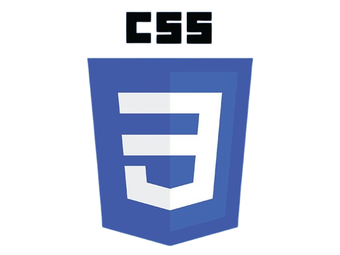
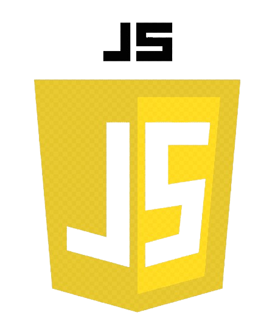
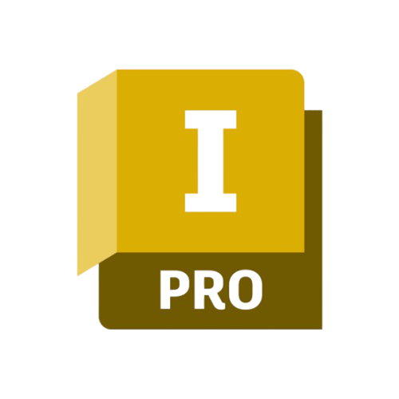
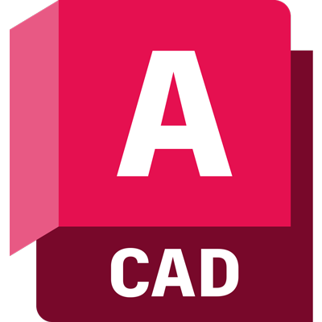

Guilherme Muniz
Guilherme Muniz
Guilherme Muniz
Guilherme Muniz
Tenho conhecimentos em Python, adquiridos durante a graduação e cursos, como o CS50's, utilizei a linguagem principalmente para resolver problemas lógico-matemáticos.
Meu conhecimento em C é advindo do curso técnico em Mecatrônica, nele utilizei a linguagem no desenvolvimento de sistemas embarcados (ESP32, Arduino).
Tive contato com Java durante o desenvolvimento de um site educativo em grupo, por meio da IDE Processing.
Estou iniciando meus estudos em Programação Web, devido ao curso CS50's, por ele tive contato com HTML e já comecei a fazer alguns sites, como esse portifólio.

Aprendi CSS durante o curso CS50's, e estou aplicando meus conhecimentos em projetos práticos para estilizar sites.

Utilizo o JavaScript para aplicar meus conhecimentos e criar interatividade em sites.

Tive contato com SQL durante o curso CS50's, sei as funções básicas de consulta e manipulação de dados e estou trabalhando em um projeto pessoal que envolve banco de dados.
Utilizo o SQLite para armazenar e gerenciar dados em projetos pessoais e exercícios propostos em cursos.
Estudei Flask durante o curso CS50's, e estou aplicando meus conhecimentos em projetos práticos para criar aplicações web.
Aprendi Bootstrap durante o curso CS50's, e estou aplicando meus conhecimentos em projetos práticos para criar layouts responsivos, como esse portifólio.

Meus conhecimentos em Inventor foram adquiridos durante o curso técnico, nele modelei estruturas mecânicas como o varal, engrenagens e peças impressas em 3D.

Assim como o Inventor, aprendi AutoCAD durante o curso técnico, utilizei o software para desenvolver esquemas elétricos e diagramas de sistemas embarcados.
Desenvolvi habilidades no uso do Pacote Office durante toda minha caminhada acadêmica, posso utilizar Word, Excel e PowerPoint, por exemplo, com eficiência. Além disso, realizei um curso de Excel.